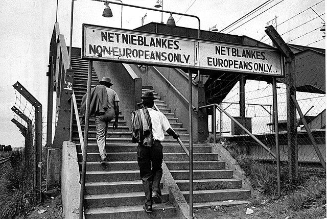
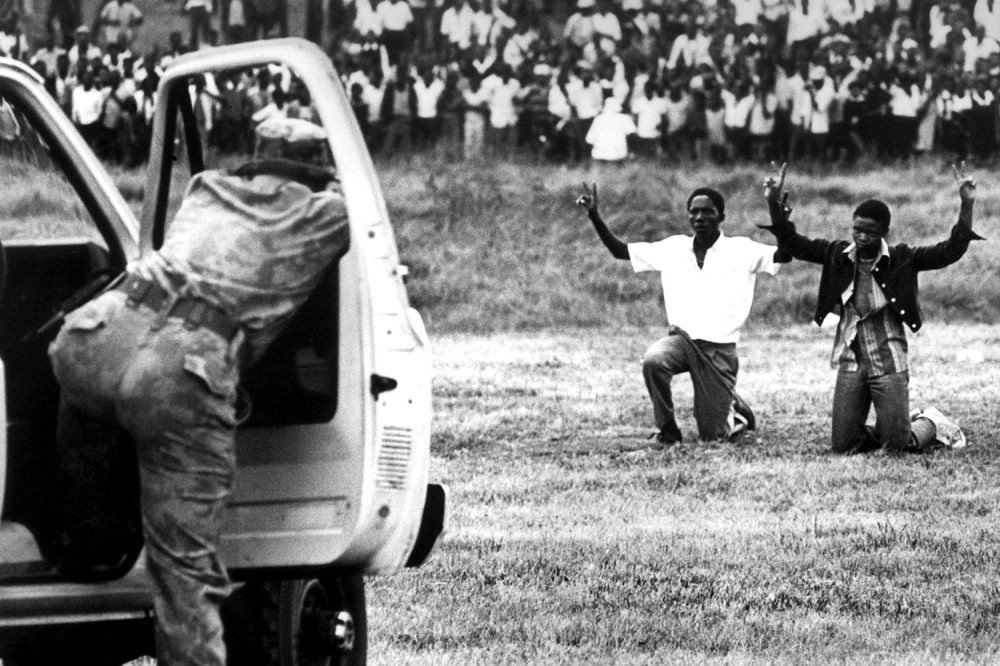

Native/Black Africans
In many ways the Apartheid system is similiar to the Jim Crow in the U.S. Both were highly racist systems designed to keep black people down, but one main difference between to two is that Jim Crow wasn’t legal in America. After the American Civil War the 13th, 14th, and 15th admendments made it so that slavery was illegal, made all citizens have equal rights and equal protection under the law, and made it illegal to deny the right to vote on the account of race. Those three would haved made Jim Crow illegal, but by the end of reconstruction and the military not enforcing it in the south Jim Crow rose due there not being an enforcer and the way society was.
Even before it officially began in the forties discrimination laws have been in place in South Africa sence Dutch settlers landed Cape Colony. 1913 the Land Acts were passed forcing its black citizens to live in reserves. By the time Apartheid came into law black people, if they weren’t already heavily restricted, became even more restricted. Marriage between whites and people of other races was banned, sexual relation between black and white South Africans was also banned.
More Land Acts would be passed setting aside 80% of the country for the minority whites while Pass Laws required non-whites to carry documents to authoried them being in restricted areas.

Mining companies that were owned by whites used tactics such intimidation and discrimination to exploit their black workers, transforming it into slavery like the Dutch and British settlers done before. While all the more if you wanted to the ability to make life better for yourself it would be impossible.
Like any group of people with no rights the blacks would immediately fight against the racist laws. The ANC and its Defiance Campaign mobilizied the people. Boycotts, strikes, and non-violent protest would organize the fight for freedom. It won’t be uncommon for the these peaceful demonstrations to be met with violence like tose in the Civil Rights Movement in America. One such example of police Brutality is the Sharpeville massacre killing 69 people.
With every new way blacks found in fight the evil system more and more restrictive laws keep getting passed. For people of South Africa this is a inter-generational thing.
